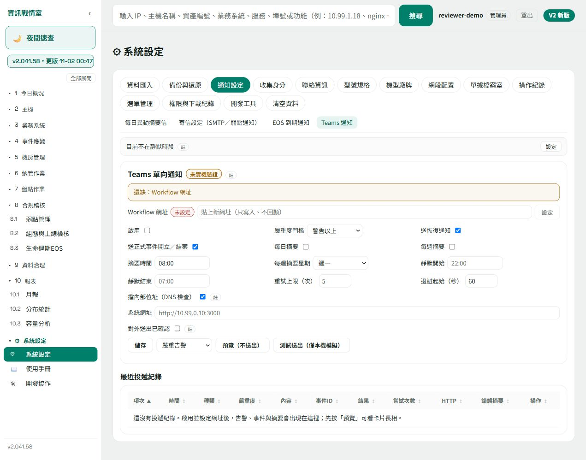
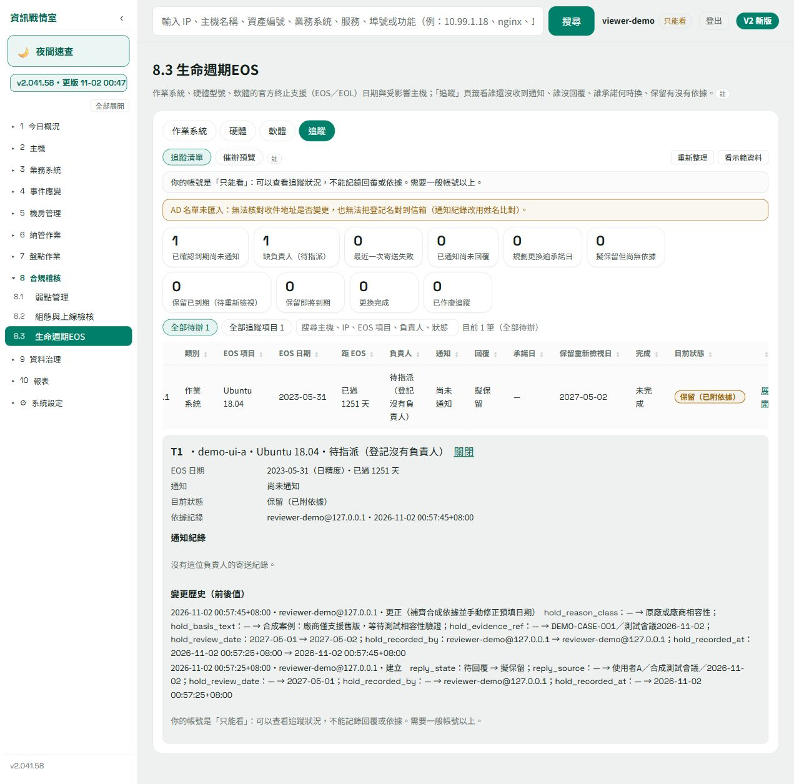

WEBIt3 操作畫面補頁
本機假資料示範1. Teams 尚未設定的畫面
- 進入通知設定，查看Teams設定與目前啟用狀態。
- 確認網址是否已設定、通知是否啟用，以及畫面上的確認選項。這張示例仍未設定、未啟用。
- 公司實際設定另由本人處理；SOP截圖不放完整Webhook或秘密。是否送達，以實際接收端與時間證據另記。

| 可由本圖說明 | 仍須另留證據 |
|---|---|
| 設定欄位、空設定與未啟用狀態。 | 公司Workflows登入授權、實際網址建立、頻道收到訊息。 |
2. EOS 唯讀角色看歷史
- 以「只能看」角色進入EOS追蹤，展開項目查看保留依據與歷史。
- 確認唯讀提示，並確認沒有填寫或更正表單。這不代表具有修改權限。
- 閱讀保留紀錄時，仍分別看官方EOS日、通知、回覆與完成狀態；保留依據不會改掉廠商日期，也不等同更換完成。
